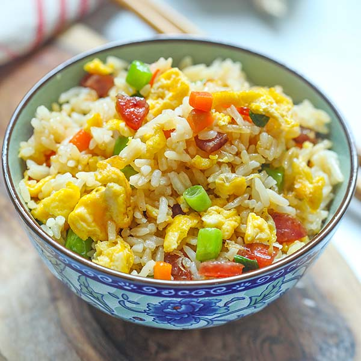

Fried Rice Recipe
Home

Description
Fried rice is a very traditional and delicate piece of art, where eggs have to be beaten to perfection and mixed with preferably a day's old rice. It is friend with much forte, adding prawns, taiwanese sausage, corn and spring onions,fried to perfection where its aroma leaves you salivating
List of Ingredients
- 2 eggs
- 500g of rice
- Corn
- garlic
- Spring onions
- Taiwan sausage
- diced carrots
STEPS
- Prep cold rice: Use 4 cups of cold, day-old cooked rice (or spread freshly cooked rice on a tray to cool and dry) so the grains stay separate and do not get mushy.
- Sauté aromatics and veggies: Heat a large wok or skillet with high-heat oil over medium-high heat, then cook diced vegetables like carrots, peas, garlic, or onions for 2 to 3 minutes.
- Scramble the eggs: Push the vegetables to one side of the pan, crack or pour beaten eggs into the empty space, scramble until cooked, and mix them together with the vegetables.
- Stir-fry the rice: Add the cold rice into the pan, breaking up any clumps, and toss everything together over high heat for 2 to 3 minutes until hot.
- Season and finish: Drizzle soy sauce (and a touch of oyster sauce or sesame oil) around the edges of the pan, toss well, and garnish with chopped green onions before serving.